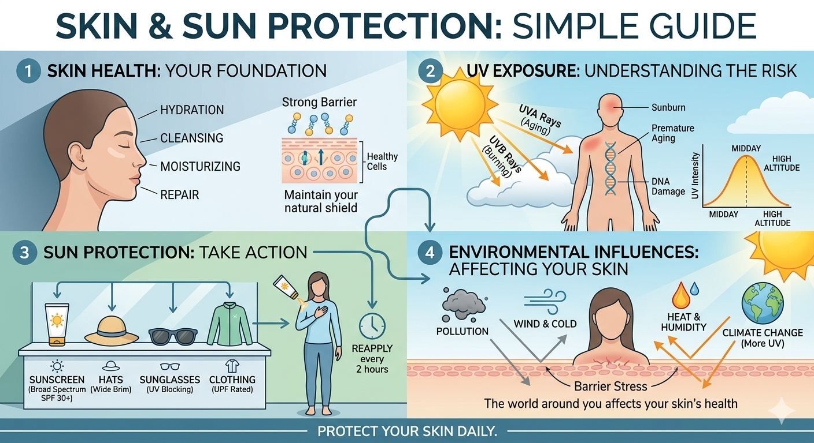
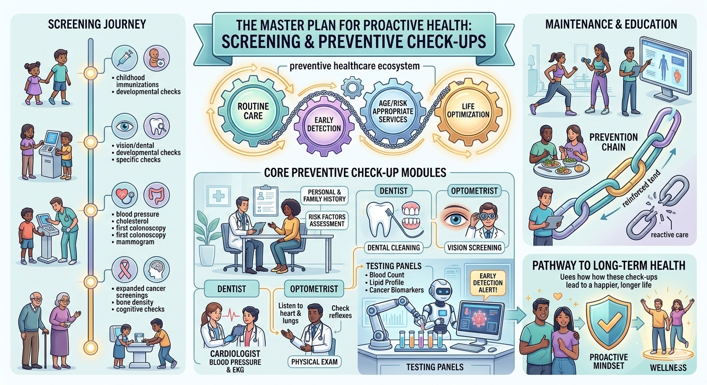
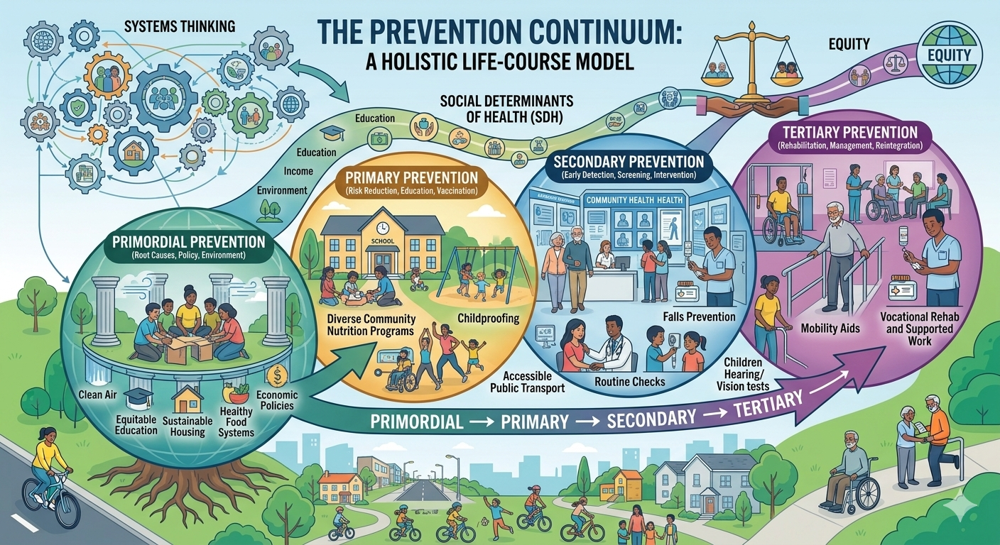
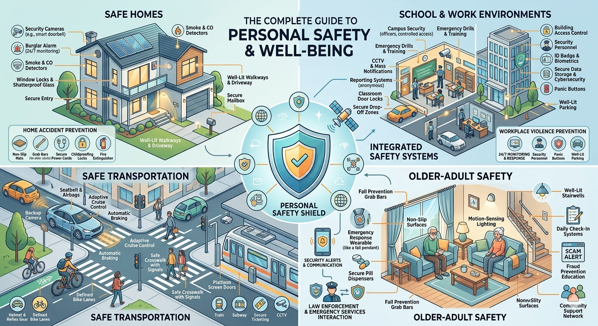
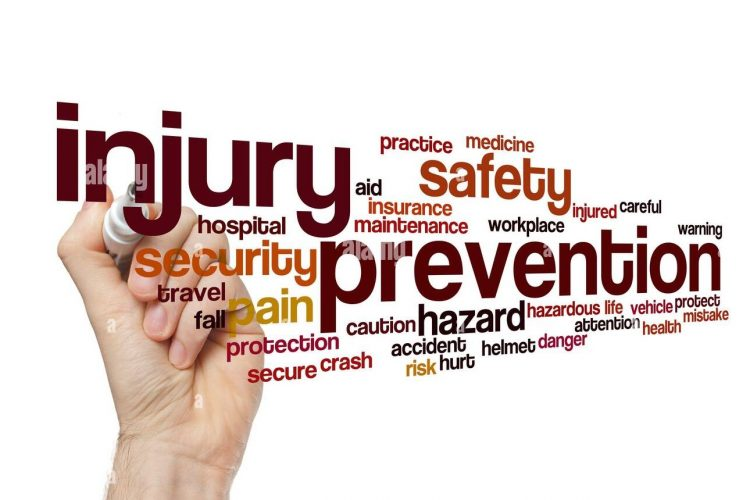
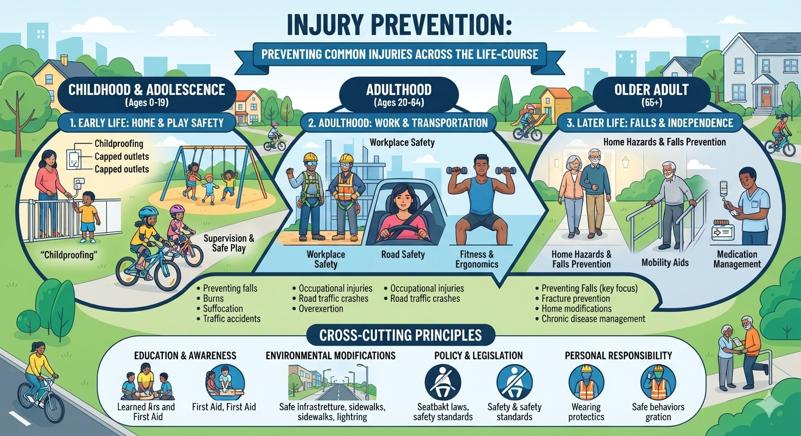
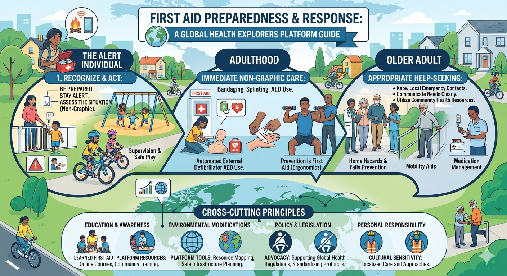

01
Prevention
Some health problems can be prevented, reduced or detected early through healthy environments, vaccination, screening, hygiene, safety and evidence-informed care.
Learn how everyday care, prevention, safety, health literacy and timely help-seeking can help people protect and promote health throughout life.
Personal health is more than personal habits. Explore the knowledge and skills that help us care for ourselves, prevent avoidable harm, respond safely and navigate health systems.
Build practical knowledge about your body, hygiene and skin health.
Explore topics →Discover screening, prevention, safety and injury-prevention approaches.
Explore topics →Learn first-aid principles and understand when professional help is needed.
Explore topics →Find reliable information, understand medicines and navigate health services.
Explore topics →Personal care includes everyday actions, preventive services, health information, safety and the ability to recognize when support is needed.
But health is never only an individual responsibility. Families, schools, communities, health systems and public policy all influence our opportunities to be healthy.
Some health problems can be prevented, reduced or detected early through healthy environments, vaccination, screening, hygiene, safety and evidence-informed care.
Self-care can help individuals, families and communities promote and maintain health, prevent disease and respond appropriately to health needs.
Self-care complements health services; it does not replace them.
Finding, understanding, evaluating and using trustworthy health information helps people make informed decisions and participate meaningfully in their care.
How can we become better informed about our health without assuming that every health problem can be solved by an individual alone?
Healthy personal care is practical, respectful and evidence-informed. It is not a measure of someone's worth or appearance.
Everyday practices that help maintain health and reduce the spread of infection.
Explore Personal Hygiene →Understand normal variation and recognize meaningful changes that may deserve attention.
Explore →
Learn about UV exposure, skin health and practical protection.
Explore Skin & Sun Protection →Prevention works best when informed individual action is supported by safer homes, schools, communities and health systems.

Understand why some screening tests are recommended for particular populations and health questions.
Explore Screening →
Explore vaccination, preventive visits, risk reduction and evidence-informed care.
Explore Prevention →
Recognize preventable hazards and help create safer everyday environments.
Explore Personal Safety →

Identify hazards, understand risk and improve environments before harm occurs.
Explore Injury Prevention →First aid has limits. Knowing when to involve a trusted adult, health professional or emergency service is part of health literacy.

Learn basic principles and understand when professional help is needed.
Explore First Aid →Learn why new, persistent, worsening or concerning health problems deserve appropriate attention.
Explore →Asking for help is not weakness. It is health literacy.
Asking for help is a health skill. A trusted adult, pharmacist, nurse, doctor or other qualified professional can help when a question goes beyond what you can safely manage yourself.
Create conditions that make healthy choices easier: safe environments, education, physical activity, social connection and access to care.
Reduce known risks through vaccination, hygiene, safety, environmental protection and evidence-informed prevention.
Appropriate screening and timely assessment can identify some health problems earlier.
When illness or injury occurs, timely, appropriate professional care can reduce complications and support recovery.
Prevention is strongest when personal action and supportive systems work together.
No. Income, housing, education, language, disability, transportation, geography, discrimination and access to services can influence health opportunities.
Not necessarily. Information may be difficult to understand, unavailable in someone's language or inaccessible because of digital, educational or economic barriers.
Not if it is inaccurate, confusing or contradictory. Health literacy requires appraisal, not simply collecting information.
Individuals matter, but so do families, schools, healthcare systems, communities, governments and the wider environment.
Learn about your body, habits, risks, questions and preventive needs.
Support healthy routines and create environments where asking for help is normal.
Schools, pharmacies, clinics and community organizations can make preventive care easier to access.
Public-health policies influence access to vaccines, screening, medicines, information and essential services.
Global health asks whether everyone has a fair opportunity to access trustworthy information, prevention and quality care.
Health is shaped not only by personal knowledge and behaviour but also by the conditions in which people live, learn, work and access services.
Can influence access to food, transportation, medicines and services.
Helps shape health knowledge, communication and information appraisal.
Health information should be understandable and culturally and linguistically appropriate.
Internet access and digital skills increasingly influence health information and services.
Availability, affordability and quality influence whether prevention is possible.
Stigma and discrimination can create barriers to information and care.
Safe housing and supportive environments influence health and safety.
Health needs and appropriate preventive services change throughout life.
If trustworthy health information exists but some people cannot access, understand or use it, has the health system done enough?
Good health information is not simply information that sounds convincing.
Ask who produced it, what evidence supports it, what may be missing and whether qualified health authorities or professionals agree.
Where did this information come from? Can I identify the organization or author?
Do I understand the terminology, numbers and recommendations?
Is the evidence credible? What might be missing? Is the claim exaggerated?
What action is appropriate, and when should I ask a qualified professional?
For important health questions, start with authoritative public-health and healthcare sources such as WHO, national public-health agencies, Health Canada, CDC, qualified healthcare professionals and evidence-based clinical guidance.
A search result, influencer post or anonymous social-media claim is not automatically evidence.
Then ask: What evidence supports the answer? What remains uncertain? And when would professional advice be appropriate?
Which part of personal preventive health do you understand best?
Which part would you like to learn more about?
Have you ever believed a health claim before checking its source?
World Health Organization (WHO), Centers for Disease Control and Prevention (CDC), Health Canada and UNICEF.
Evidence-informed, youth-friendly, prevention-focused and equity-oriented.
September 2026
September 2027
GHE treats health information as living evidence. Recommendations, guidelines and public-health evidence can change as knowledge develops.